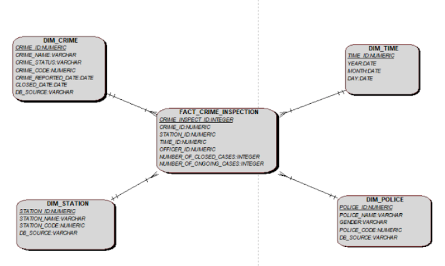
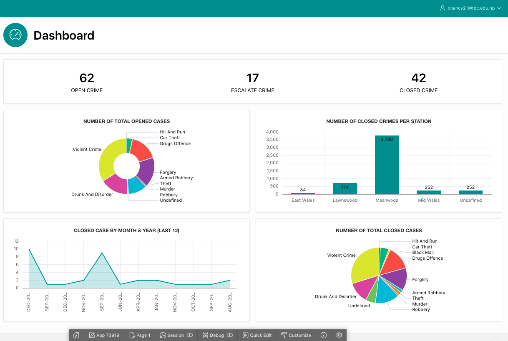
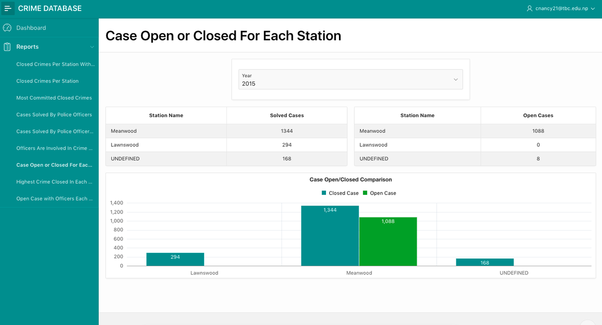
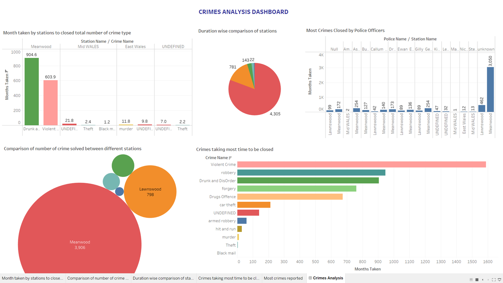
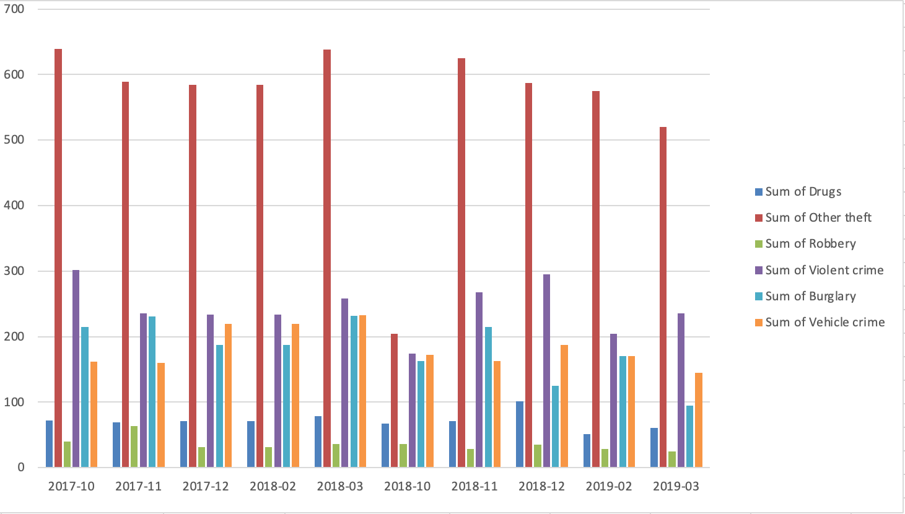

Building a Crime Data Warehouse for UK Police Stations

Police stations across England and Wales record every reported crime, from new cases to ones that stay open for more than a year. But the data lived in two separate systems, one for English police (PRCS) and one for Wales, with similar but not identical structures. For my Advanced Database Systems module at Leeds Beckett University, I designed and built a data warehouse in Oracle that brings both systems together, then built dashboards in Oracle APEX, Tableau and Excel so managers can track crime and case closures in one place.
The goal: give regional stations one reliable source of truth to answer questions like how many crimes are closed each month, how many cases are still ongoing, and which stations have the most escalated cases, so they can work towards their targets of reducing crime and closing more cases.
Methods
Designing the data mart
I followed the Kimball approach and chose a star schema over a snowflake schema, because analysts need fast, simple queries more than they need fully normalized tables. The fact table holds one row per crime inspection, with the number of closed and ongoing cases as its measures. Around it sit four dimensions: crime (type, status, reported and closed dates), police officer, station and time. I documented every column in a data dictionary, including where it comes from and how it is transformed, so a new team could understand and extend the model.
The ETL pipeline
The pipeline runs in five stages, each written as PL/SQL procedures in Oracle Application Express:
- Staging: pull crime, officer and station records from both source systems into staging tables, with sequences and triggers generating surrogate keys.
- Separating clean and bad data: check every staged row against quality rules and split it into a clean table or a bad table.
- Re-cleaning: fix the bad rows where possible and move them back into the clean table.
- Transforming: copy the clean data into transform tables shaped for the warehouse.
- Loading: load the dimension tables and then the fact table, looking up each surrogate key.
1. Staging data from two systems
The English system splits a reported crime across several normalized tables, so the staging step joins them back together. A MERGE statement only inserts records that aren't already staged, so the procedure can safely run again. A DB_SOURCE column records which system each row came from:
-- Merge English (PRCS) crime records into the staging table
MERGE INTO STAGE_CRIME TARGET_CRIME
USING (SELECT C_REPORTED.REPORTED_CRIME_ID, C_TYPE.CRIME_TYPE_DESC, C_REPORTED.CRIME_STATUS,C_REPORTED.DATE_REPORTED,
C_REPORTED.DATE_CLOSED, P_ALLOCATION.D_EMP_ID , C_REPORTED.FK2_STATION_ID
FROM PL_REPORTED_CRIME C_REPORTED
INNER JOIN PL_CRIME_TYPE C_TYPE
ON C_REPORTED.FK1_CRIME_TYPE_ID = C_TYPE.CRIME_TYPE_ID
FULL JOIN PL_WORK_ALLOCATION P_ALLOCATION
ON P_ALLOCATION.S_REPORTED_CRIME_ID = C_REPORTED.REPORTED_CRIME_ID) SOURCE_CRIME
ON (TARGET_CRIME.CRIME_CODE = SOURCE_CRIME.REPORTED_CRIME_ID
AND TARGET_CRIME.POLICE_OFFICER_ID = SOURCE_CRIME.D_EMP_ID)
WHEN NOT MATCHED THEN
INSERT (CRIME_CODE, CRIME_NAME, CRIME_STATUS, REPORTED_DATE, CLOSED_DATE, POLICE_OFFICER_ID, STATION_ID, DB_SOURCE )
VALUES (SOURCE_CRIME.REPORTED_CRIME_ID , SOURCE_CRIME.CRIME_TYPE_DESC, SOURCE_CRIME.CRIME_STATUS,
TO_DATE(SOURCE_CRIME.DATE_REPORTED, 'MM/DD/YY'), TO_DATE(SOURCE_CRIME.DATE_CLOSED, 'MM/DD/YY'), SOURCE_CRIME.D_EMP_ID ,SOURCE_CRIME.FK2_STATION_ID, 'prcs');2. Separating clean and bad data
Real data has gaps: missing crime names, missing officers, or a case that closed before it was reported. Instead of loading everything, a procedure checks each row and sends it to a clean or a bad table. A closed crime needs both dates in the right order, while an open or escalated crime must not have a closed date yet:
-- Inside a cursor loop over every staged crime record
IF VAR.CRIME_NAME IS NOT NULL AND VAR.POLICE_OFFICER_ID IS NOT NULL THEN
IF VAR.CRIME_STATUS = 'CLOSED' AND VAR.REPORTED_DATE IS NOT NULL AND VAR.CLOSED_DATE IS NOT NULL
AND TO_DATE(VAR.REPORTED_DATE, 'mm/dd/yyyy') <= TO_DATE(VAR.CLOSED_DATE, 'mm/dd/yyyy') THEN
INSERT INTO CLEAN_CRIME_DATA
VALUES (VAR.CRIME_ID,VAR.CRIME_CODE, VAR.CRIME_NAME, VAR.CRIME_STATUS, VAR.REPORTED_DATE,
VAR.CLOSED_DATE, VAR.POLICE_OFFICER_ID, VAR.STATION_ID, VAR.DB_SOURCE);
ELSIF VAR.CRIME_STATUS= 'OPEN' OR VAR.CRIME_STATUS = 'ESCALATE' AND VAR.CLOSED_DATE IS NULL AND
VAR.REPORTED_DATE IS NOT NULL THEN
INSERT INTO CLEAN_CRIME_DATA
VALUES (VAR.CRIME_ID, VAR.CRIME_CODE, VAR.CRIME_NAME, VAR.CRIME_STATUS, VAR.REPORTED_DATE,
VAR.CLOSED_DATE, VAR.POLICE_OFFICER_ID, VAR.STATION_ID, VAR.DB_SOURCE);
ELSE
INSERT INTO BAD_CRIME_DATA
VALUES(VAR.CRIME_ID, VAR.CRIME_CODE, VAR.CRIME_NAME, VAR.CRIME_STATUS, VAR.REPORTED_DATE,
VAR.CLOSED_DATE, VAR.POLICE_OFFICER_ID, VAR.STATION_ID, VAR.DB_SOURCE);
END IF;
ELSE
INSERT INTO BAD_CRIME_DATA
VALUES(VAR.CRIME_ID, VAR.CRIME_CODE, VAR.CRIME_NAME, VAR.CRIME_STATUS, VAR.REPORTED_DATE,
VAR.CLOSED_DATE, VAR.POLICE_OFFICER_ID, VAR.STATION_ID, VAR.DB_SOURCE);
END IF;3. Re-cleaning and testing with bad data
The source data had very few errors, so to prove the re-cleaning worked I deliberately updated staging rows with errors, such as missing officer names, invalid genders and missing station names. Re-cleaning procedures then fixed what they could (for example, setting a missing crime name to "UNDEFINED") and moved the rows back into the clean tables.
4. Loading the warehouse
The load procedures use MERGE as an upsert: new records are inserted and existing ones are updated, so a crime that changes from open to closed is updated rather than duplicated. The time dimension is built from the distinct months and years in the crime data:
CREATE OR REPLACE PROCEDURE LOAD_TIME_DIM
AS
BEGIN
MERGE INTO DIM_TIME D_TIME
USING (
SELECT DISTINCT TO_CHAR(REPORTED_DATE, 'YYYY') YEAR,
TO_CHAR(REPORTED_DATE, 'MM') MONTH
FROM TRANSFORM_CRIME
)S_CRIME
ON
(
D_TIME.YEAR = S_CRIME.YEAR AND
D_TIME.MONTH = S_CRIME.MONTH
)
WHEN NOT MATCHED THEN
INSERT (MONTH, YEAR)
VALUES (S_CRIME.month, S_CRIME.year);
END LOAD_TIME_DIM;Finally, a procedure loads the fact table by looking up the surrogate key for each crime, station, officer and month, and counts closed and ongoing cases.
Part 2: Turning the warehouse into dashboards
In the second part of the module, I used the warehouse to report on the stations' KPI of closing crimes. I joined the fact table with all four dimensions into one reporting table, then built the same analysis in three tools: Oracle APEX, Excel and Tableau.
Oracle APEX dashboard

The APEX dashboard gives a quick overview: 62 open crimes, 17 escalated crimes and 42 closed crimes, along with open cases by crime type, closed crimes per station, closed cases by month over the last 12 months, and closed cases by crime type. Behind it, I built nine filterable APEX reports, such as closed crimes per station with the average time taken to close them, the officers who closed the most cases each year, and open cases with the number of officers assigned.

Tableau dashboard

The Tableau dashboard focuses on time to close. A few things stood out:
- Violent crime takes the longest to close, followed by robbery and drunk and disorderly offences, which tells managers where to focus resources.
- Meanwood station closed by far the most crimes (3,906), compared with 798 at Lawnswood.
- Data quality shows up in the reports. Records that were re-cleaned as "UNDEFINED" or "unknown" still appear in the charts, which is a reminder that cleaning rules decide what a dashboard can say.
Monthly trends in Excel

The monthly summary shows that "other theft" is by far the most common category, usually between about 500 and 640 cases a month, while robbery and drug offences stay the lowest.
- Oracle SQL
- PL/SQL
- Oracle APEX
- Star schema
- ETL
- Data dictionary
- Tableau
- Excel